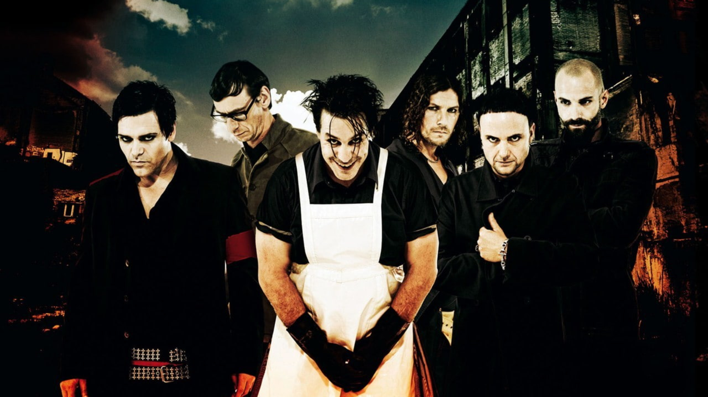
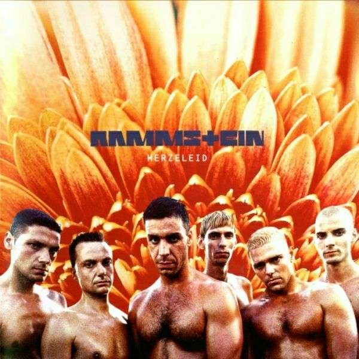
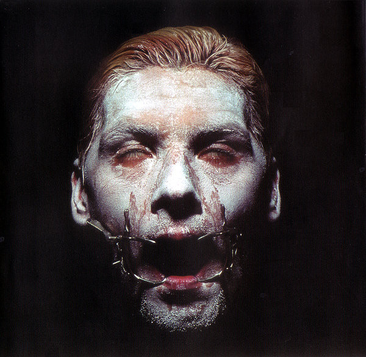
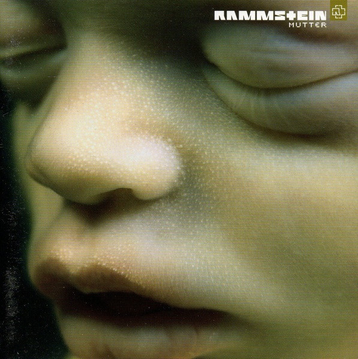
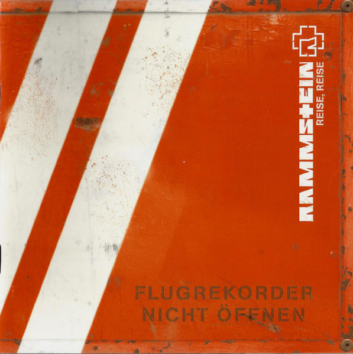
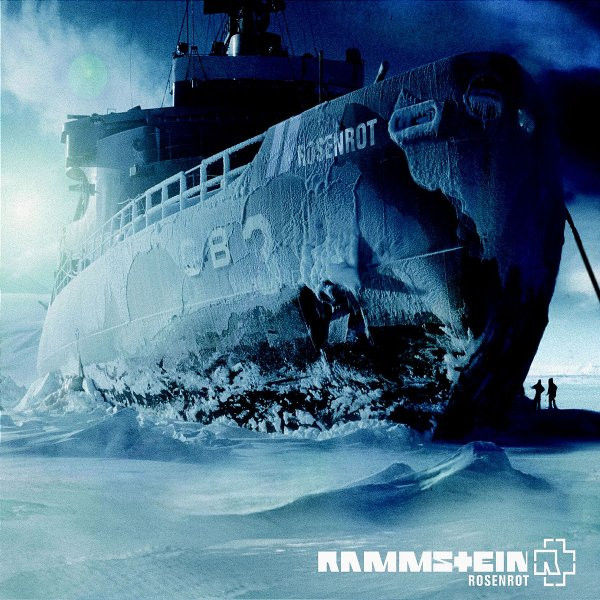
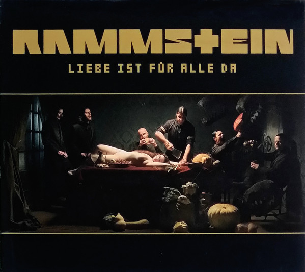
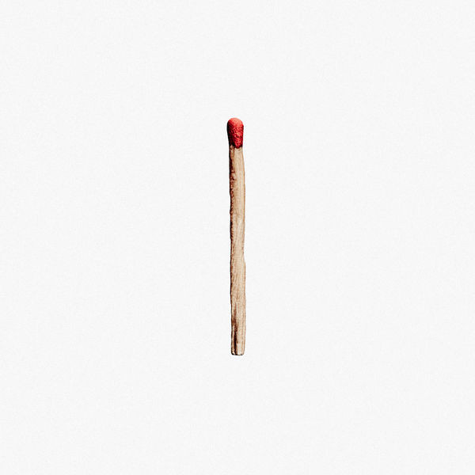
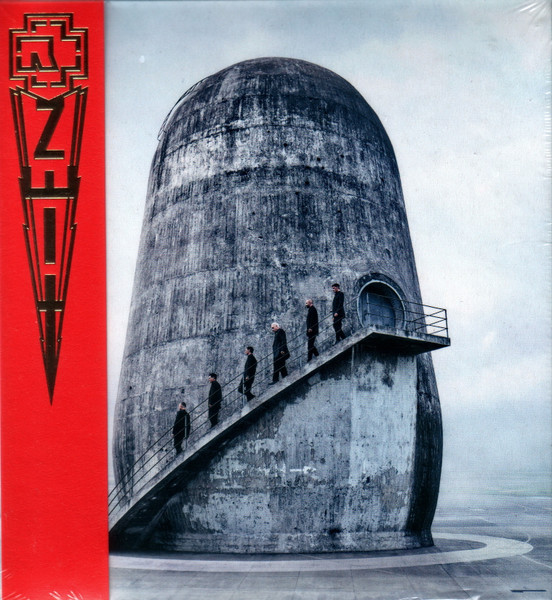

Rammstein
(wymowa niemiecka: [ˈʁamʃtaɪn])
Niemiecka grupa muzyczna tworząca muzykę z gatunku Neue Deutsche Härte, która powstała w
Berlinie w 1994 roku. Skład zespołu, który obejmuje wokalistę Tilla Lindemanna,
gitarzystę
prowadzącego
Richarda Z. Kruspe, gitarzystę rytmicznego Paula Landersa, basistę Olivera
Riedela, perkusistę Christopha Schneidera oraz klawiszowca Christiana "Flake" Lorenza
, nie zmienił się przez
całą historię zespołu, podobnie jak ich podejście do pisania utworów. Przed
założeniem zespołu, niektórzy członkowie byli związani z punkrockowymi zespołami Feeling B oraz First
Arsch.
DYSKOGRAFIA
Do tej pory Rammstein wydał 7 albumów studyjnych na przestrzeni ostatnich 30 lat, które sprzedały się w łącznym nakładzie ponad 20 milionów sztuk.
Aby odsłuchać danego albumu w serwisie Spotify, kliknij na jego okładkę lewym przyciskiem myszy. (Zostanie otworzony w nowej karcie)
|
 |
 |
 |
|
 |
 |
 |
|
 |
 |